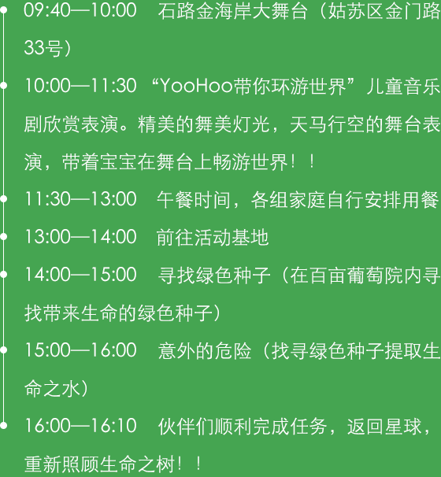

8月-《YooHoo带你环游世界》之采摘游
【活动系别】认知系
【从属学堂】采摘学堂
【活动关键词】儿童音乐剧欣赏、寻找绿色种子、采摘课堂、团队PK、DIY葡萄酒
【从属学堂】采摘学堂
【活动家庭】15—20组
【活动流程】
【制作小贴士】
1、家庭酿制地红葡萄酒味道纯正，价格便宜，不加任何添加剂和防腐剂，干净没有毒性，喝起来特别放心。
2、不要买反季节地大棚里栽种地葡萄。要买紫红色地成熟了地葡萄（尝尝味道，很甜地一般是成熟了地）;看看果蒂处，如果是青地，而且味道酸，就可能是打了"催红素"地，这样地葡萄最好不要买。
3、淡盐水浸泡十分钟左右，去掉葡萄皮上地农药和其他有害物质
【温馨提示】
1、采摘过程中，听从庄主安排，文明采摘，注意安全，禁止攀爬、折叶和折枝。
2、请大家适量采摘，不熟的不要采摘，采摘下的不要乱扔；
3、建议穿一些宽松、便于活动的衣物，免晒伤和蚊虫叮咬；
4、衣服色彩上，避免亮黄色，避免招惹小飞虫，影响采摘兴致。
5、建议穿着运动鞋。